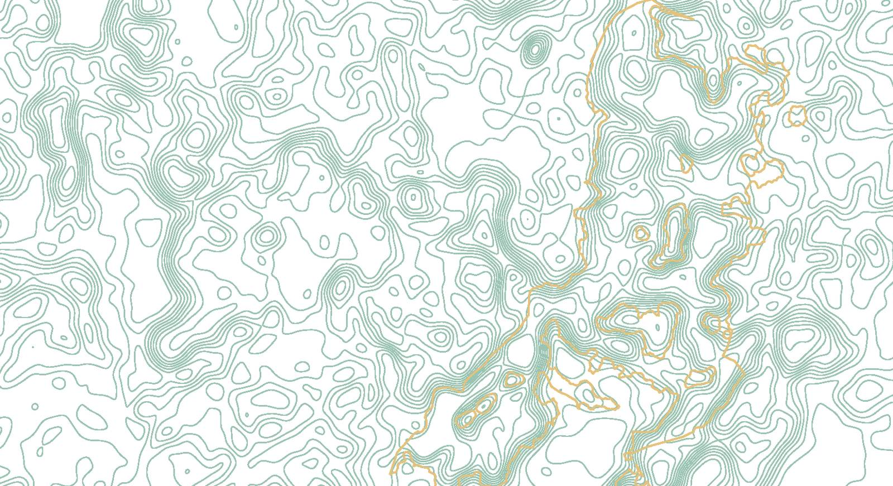
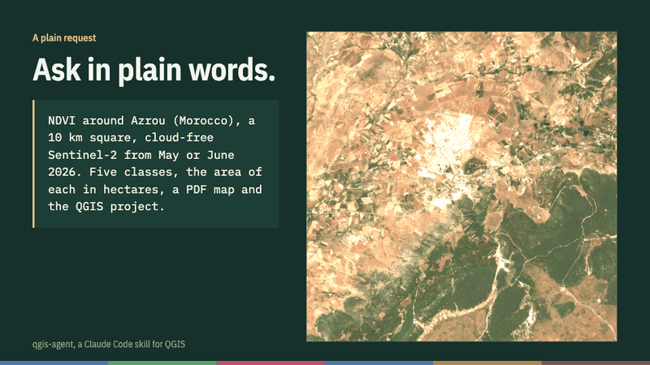
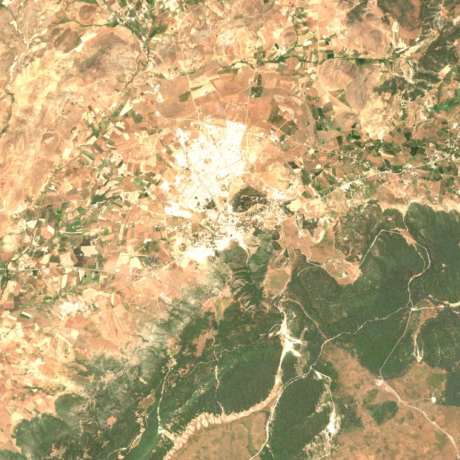
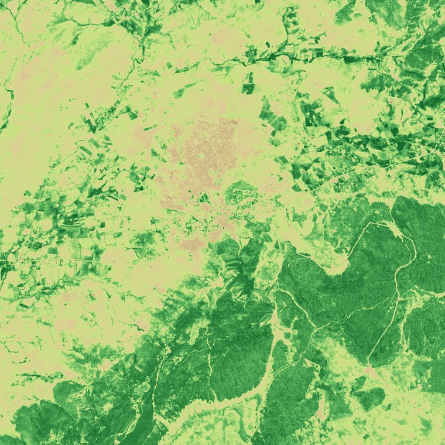
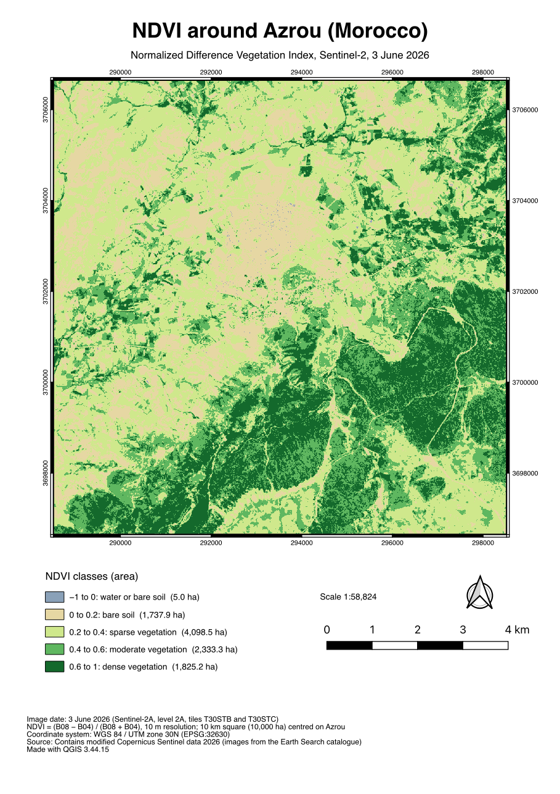
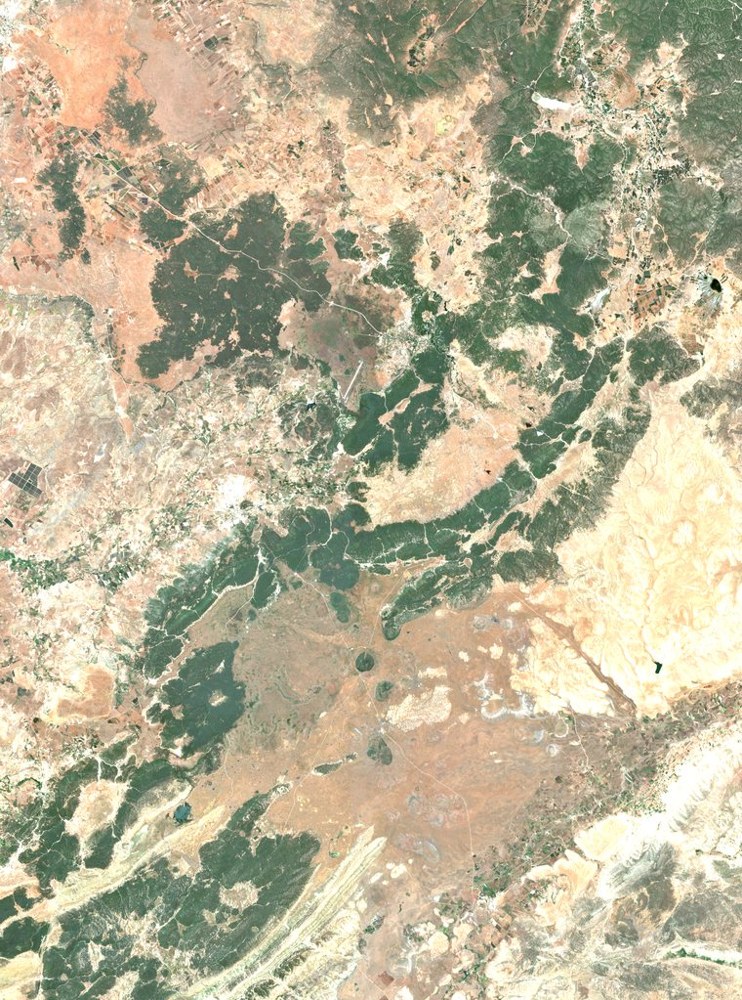
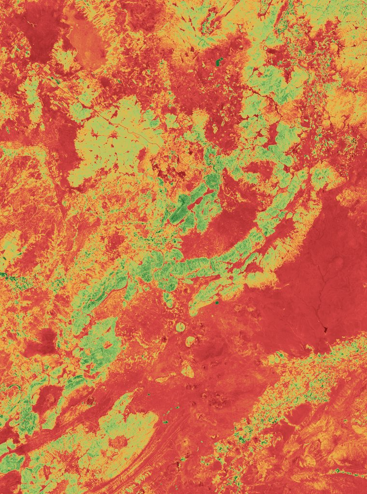
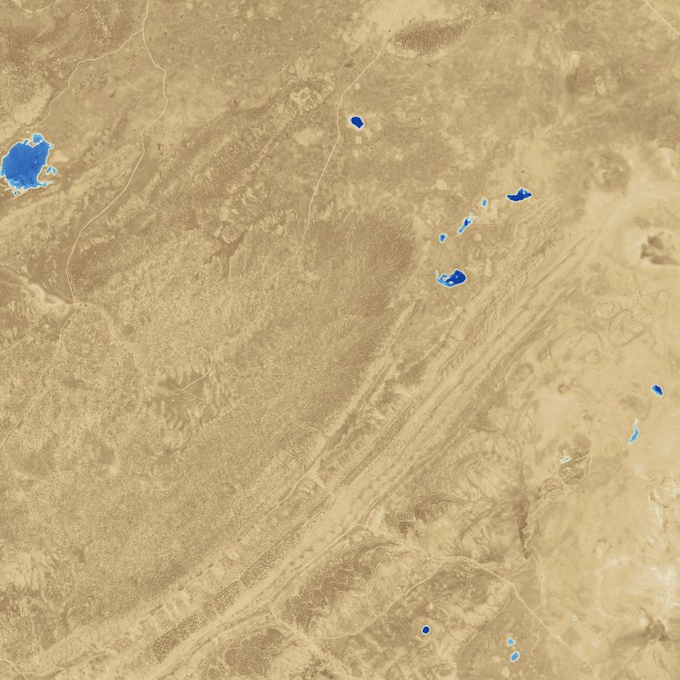

An AI agent for QGIS that checks its own maps.
qgis-agent is a free, open-source skill for Claude Code. Ask for a GIS or remote sensing task in plain words: it plans first, works with QGIS's own tools, and verifies every result before handing it over.

How it works
The same five steps for a single reprojection or a full processing chain. You stay in charge of the question and the judgement; the agent does the hands-on work.
- 1
Plans, then waits
Steps, QGIS tools, projection, resolution and files, approved before anything runs.
- 2
Uses QGIS's tools
Raster calculator, reclassification, zonal histogram, print layouts: steps you can redo by hand.
- 3
Shows evidence
Map previews, key figures and value ranges, not just "done".
- 4
Checks the results
Projection, ranges, area totals, the project reopened from scratch, one step recomputed another way.
- 5
Reports, then writes
A factual work report first; a report or paper draft on request, built only from real results.
A map can look right and be wrong.
During testing, an agent could not reach the server that stores the satellite images. Instead of saying so, it worked around the problem with its own code and an older copy of the catalogue. That copy's values already included a correction that its description still asked for, so every band came out too low.
The finished map looked normal. Only an independent recalculation showed the problem. The skill now detects that trap, switches to a safe fallback, and tells the agent to check values against reference ranges before computing anything.
Gallery
Real outputs from projects in Morocco, all from open Sentinel-2 data.






Install
You need Claude Code on your computer and QGIS 3 or 4. Claude on the web cannot drive a QGIS installed on your machine.
As a plugin
/plugin marketplace add abdelaalimouid/qgis-agent /plugin install qgis-agent@qgis-agent
Type both in Claude Code. Updates come with claude plugin update qgis-agent@qgis-agent.
By hand
~/.claude/skills/qgis-agent/SKILL.md
Download qgis-agent.zip and unzip it into ~/.claude/skills/ so the file lands at the path above, then start a new session.
Use the qgis-agent skill: check that QGIS is detected, then propose a CLAUDE.md file for this project. After that, just ask; Claude opens the skill by itself and answers in your language.The guide
Working with an AI agent in QGIS explains the method in ten pages: setting up the project, writing the request, the work cycle, checking without redoing everything, the work report and the write-up. It ends with a real work report from the Ifrane forest.
Roadmap and how to contribute: Windows testers and new skills are especially welcome.
Cite
Mouid, A. (2026). qgis-agent: a Claude Code skill for working in QGIS [software]. https://github.com/abdelaalimouid/qgis-agent